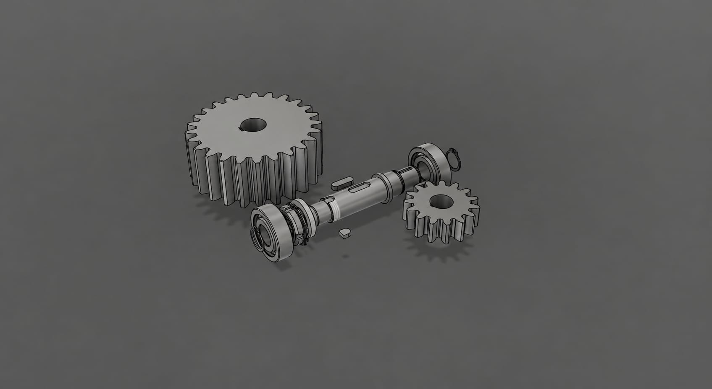
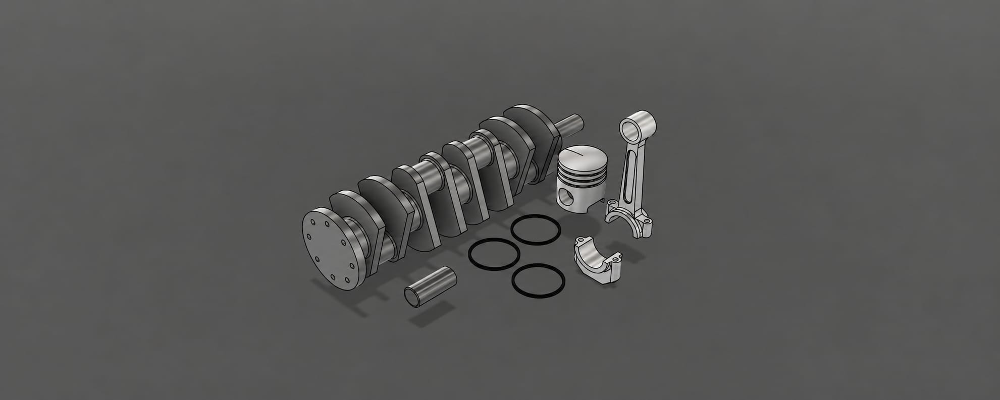

Design — Inkl. GD&T
Technische Zeichnung einer Welle

Technische Universität Dortmund
Ich studiere Maschinenbau an der TU Dortmund und interessiere mich besonders dafür, wie technische Systeme funktionieren und wie sie sich optimieren lassen. Mich begeistert es, neue Technologien kennenzulernen und ingenieurwissenschaftliche Denkweisen auf praktische Problemstellungen anzuwenden.
Mein berufliches Ziel ist es, als Ingenieur in der Produktion tätig zu sein und mich insbesondere auf die Entwicklung und Konstruktion von Groß-Baukonstruktionen zu spezialisieren.
Ich sehe meine Arbeit als Verantwortung gegenüber der Menschheit. Dieses Arbeitsumfeld bietet mir die Möglichkeit, meine fachlichen Kompetenzen weiterzuentwickeln und Werte wie Disziplin, Integrität und Ehrlichkeit aktiv zu leben.



Fundamentales Wissen in der Ingenieursbranche. Nahm das Wissen, das ich hatte, und fasste es kurz zusammen, um anderen Neulingen zu helfen.
Es soll meine Darstellungsweise sowie einen strukturierten Ablauf meiner Arbeit zeigen.
Alle Maßen (Modul, Zähnezahl, Durchmesser) berechnet und verbunden. Plugin installiert für eine leichte Erstellung der Zahnräder.
Reiner fellenz LL.M.
COO / CRO Mandates
LinkedIn
Ingenieur Didaktik
M.EE der TU Dortmund
Homepage
Für Auftragsarbeiten, Kooperationen und private Besichtigungen - ich antworte innerhalb von vierundzwanzig Stunden.